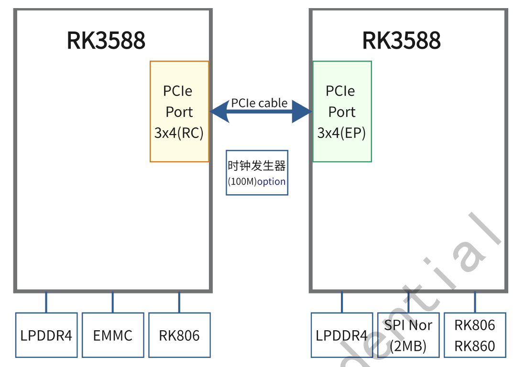
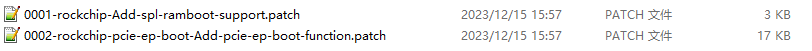
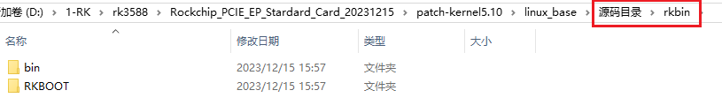
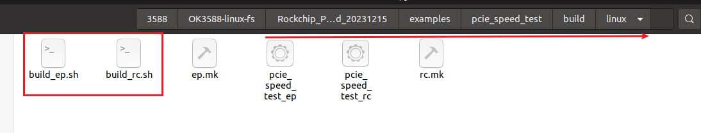
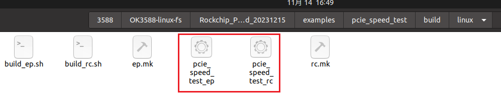
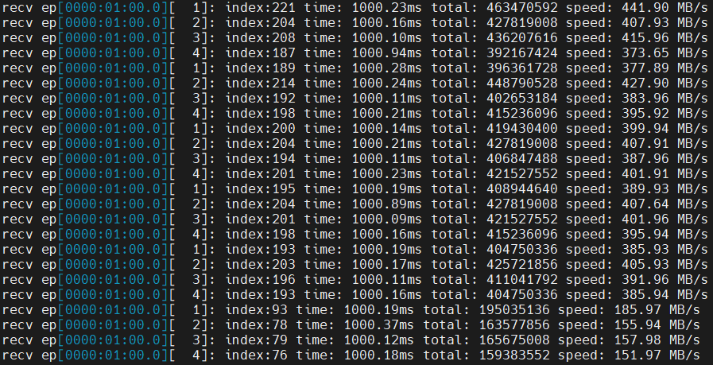
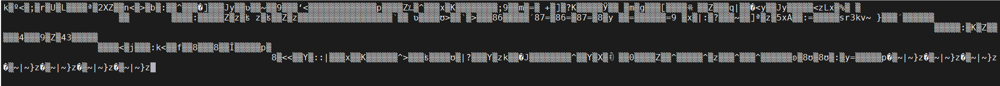
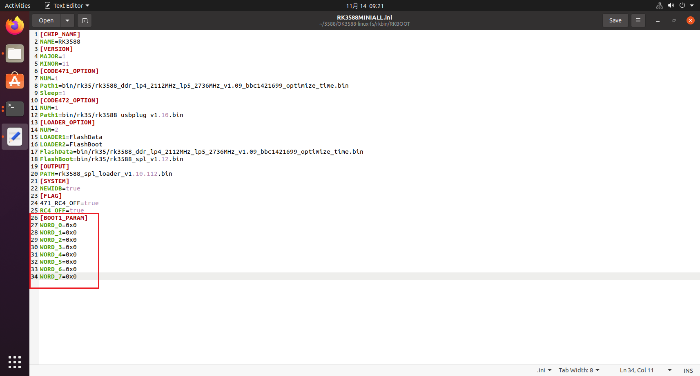
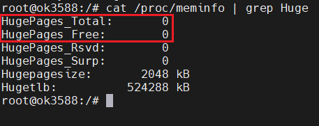

OK3588 5.10.66 Buildroot PCIE Slave Device (EP Mode)
Document classification: □ Top secret □ Secret □ Internal information ■ Open
Copyright
The copyright of this manual belongs to Baoding Folinx Embedded Technology Co., Ltd. Without the written permission of our company, no organizations or individuals have the right to copy, distribute, or reproduce any part of this manual in any form, and violators will be held legally responsible.
Forlinx adheres to copyrights of all graphics and texts used in all publications in original or license-free forms.
The drivers and utilities used for the components are subject to the copyrights of the respective manufacturers. The license conditions of the respective manufacturer are to be adhered to. Related license expenses for the operating system and applications should be calculated/declared separately by the related party or its representatives.
Revision History
Date |
Version |
Revision History |
|---|---|---|
01/05/2025 |
V1.0 |
Initial Version |
09/04/2025 |
V1.1 |
Software Settings- > 2. Kernel General Configuration- > 2. Correct OK 3588-C in the Hugepage-Modify the rootwaitdefault _ hugepage SZ of the Linux. DTS to rootwait default _ hugepagesz |
10/10/2025 |
V1.2 |
Adding complete package. |
PCIE Slave Device (EP Mode)
Document testing is based on the RK3588 development board.
During testing, both RC (Root Complex) and EP (Endpoint) are Linux devices (RK3588 development boards).
This document focuses on recording the EP card configuration method and testing method. For detailed configuration information, please refer to the documentation: Rockchip_Developer_Guide_PCIE_EP_Stardard_Card_CN.pdf
Software: Linux 5.10.66 4G+32G
Kernel version: OK3588 linux 5.10.66 version kernel (Android12 Linux ForlinxDesktop20.04 R5 release)
Uboot version: OK3588 protection encryption uboot (Android12 Linux ForlinxDesktop20.04 R4 release)
Complete Package:
Rockchip_PCIE_EP_Stardard_Card_20250218.tar.gz
Hardware Connection:

Requires only one PCIe 3.0 x4 male-to-male extension cable (TX-RX crossover cable).

Software Configuration
1. Apply Patch:
The RK3588’s PCIe Endpoint (EP) mode setup refers to official documentation and source code patches provided by Rockchip. These are located in the docs directory.

Note:
The patch file is the basic configuration of EP card. There is also an updated package, which is built upon the base patch with optimizations and fixes. After applying the base patch, replace the files in the update package directory with the corresponding files in the SDK;
Both the patch directory and the source directory need to be modified, and the two directories have the same function. You can choose to use the patch file in the patch directory to patch, or choose to replace the specific file in the source code directory to the corresponding location. You can choose one of the two methods.
Kernel
The patch file for the kernel is located at: Rockchip_PCIE_EP_Stardard_Card_20231215\patch-kernel5.10\linux_base\patch directory\kernel

According to the patch file, apply its corrections to the kernel.
After that, replace the files under the kernel in the update package.
Uboot
Uboot patch file: Rockchip_PCIE_EP_Stardard_Card_20231215\patch-kernel5.10\linux_base\patch directory\u-boot

Replace the file in u-boot under the update package after entering the patch.
Rkbin
The method of using patches to fix files under rkbin is somewhat cumbersome; you can directly replace the source code files:
Rockchip_PCIE_EP_Stardard_Card_20231215\patch-kernel5.10\linux_base\源码目录\rkbin

After replacing the files in the folder, replace the files from the update package into the corresponding locations.
Both the EP card and RC card mentioned above require configuration.
Kernel General Configuration
The following configuration items must be configured during the actual testing process to complete the EP card functionality. It is recommended to modify according to the configurations below first. For any questions, please refer to the official RK documentation: Rockchip_Developer_Guide_PCIE_EP_Stardard_Card_CN.pdf
1. SRNS
In SRNS mode, the Refclock uses its own internal clock. Setting this item allows the RC card and EP card to each use their own 100M clock generator.
Uboot
diff --git a/arch/arm/mach-rockchip/spl_pcie_ep_boot.c b/arch/arm/mach-rockchip/spl_pcie_ep_boot.c
index 7a24a1d..f1ce41a 100755
--- a/arch/arm/mach-rockchip/spl_pcie_ep_boot.c
+++ b/arch/arm/mach-rockchip/spl_pcie_ep_boot.c
@@ -81,7 +81,7 @@
#define PCIE_ATU_CPU_ADDR_HIGH 0x18
/* SRNS: Use Separate refclk(internal clock) instead of from RC */
-// #define PCIE_ENABLE_SRNS_PLL_REFCLK
+ #define PCIE_ENABLE_SRNS_PLL_REFCLK
Kernel
There is a patch file for configuring SRNS mode in the kernel: Rockchip_PCIE_EP_Stardard_Card_20231215\patch-kernel5.10\SRNS

It can be directly patched under the kernel directory.
2. Hugepage
Hugepage allocates memory through the Linux HugePageSize method. In RK’s official documentation, this method is preferred for memory allocation.
Kernel configuration file defconfig:
diff --git a/arch/arm64/configs/OK3588-Linux_defconfig b/arch/arm64/configs/OK3588-Linux_defconfig
index 59b4bf7ca..62a77acf7 100644
--- a/arch/arm64/configs/OK3588-Linux_defconfig
+++ b/arch/arm64/configs/OK3588-Linux_defconfig
@@ -734,6 +734,7 @@ CONFIG_VIRTIO_NET=y
CONFIG_NLMON=y
CONFIG_POSIX_MQUEUE=y
CONFIG_PCIE_DW_ROCKCHIP_EP=y
+CONFIG_HUGETLBFS=y
Device tree file:
diff --git a/arch/arm64/boot/dts/rockchip/OK3588-C-Linux.dts b/arch/arm64/boot/dts/rockchip/OK3588-C-Linux.dts
index 8ea120342..651f81533 100644
--- a/arch/arm64/boot/dts/rockchip/OK3588-C-Linux.dts
+++ b/arch/arm64/boot/dts/rockchip/OK3588-C-Linux.dts
@@ -5,7 +5,8 @@
compatible = "forlinx,ok3588", "rockchip,rk3588";
chosen: chosen {
- bootargs = "earlycon=uart8250,mmio32,0xfeb50000 console=ttyFIQ0 irqchip.gicv3_pseudo_nmi=0 root=PARTUUID=614e0000-0000 rw rootwait";
+ // bootargs = "earlycon=uart8250,mmio32,0xfeb50000 console=ttyFIQ0 irqchip.gicv3_pseudo_nmi=0 root=PARTUUID=614e0000-0000 rw rootwait";
+ bootargs = "earlycon=uart8250,mmio32,0xfeb50000 console=ttyFIQ0 irqchip.gicv3_pseudo_nmi=0 clk_gate.always_on=1pm_domains.always_on=1 root=PARTUUID=614e0000-0000 rw rootwait default_hugepagesz=32M hugepagesz=32M hugepages=16 ";
};
cspmu: cspmu@fd10c000 {
3. BAR
BAR settings follow the official RK documentation
Uboot
diff --git a/arch/arm/mach-rockchip/spl_pcie_ep_boot.c b/arch/arm/mach-rockchip/spl_pcie_ep_boot.c
index 7a24a1d..f1ce41a 100755
--- a/arch/arm/mach-rockchip/spl_pcie_ep_boot.c
+++ b/arch/arm/mach-rockchip/spl_pcie_ep_boot.c
@@ -201,14 +201,14 @@ static void pcie_bar_init(void *dbi_base)
writel(val, dbi_base + 0x7c);
/* Resize BAR0 to support 4M 32bits */
- resbar_base = dbi_base + PCI_RESBAR;
- writel(0x40, resbar_base + 0x4);
+ resbar_base = dbi_base + 0x2e8;
+ writel(0xfffff0, resbar_base + 0x4);
writel(0x2c0, resbar_base + 0x8);
/* BAR2: 64M 64bits */
- writel(0x400, resbar_base + 0x14);
+ writel(0xfffff0, resbar_base + 0x14);
writel(0x6c0, resbar_base + 0x18);
/* BAR4: Fixed for EP wired register, 1M 32bits */
- writel(0x10, resbar_base + 0x24);
+ writel(0xfffff0, resbar_base + 0x24);
writel(0xc0, resbar_base + 0x28);
/* Set flags */
rockchip_pcie_ep_set_bar_flag(dbi_base, 0, PCI_BASE_ADDRESS_MEM_TYPE_32);
Kernel
diff --git a/drivers/pci/controller/dwc/pcie-dw-ep-rockchip.c b/drivers/pci/controller/dwc/pcie-dw-ep-rockchip.c
index 1addd6c38..55e7756d4 100755
--- a/drivers/pci/controller/dwc/pcie-dw-ep-rockchip.c
+++ b/drivers/pci/controller/dwc/pcie-dw-ep-rockchip.c
@@ -532,18 +532,18 @@ static void rockchip_pcie_resize_bar(struct rockchip_pcie *rockchip)
/* Resize BAR0 4M 32bits, BAR2 64M 64bits-pref, BAR4 1MB 32bits */
bar = BAR_0;
- dw_pcie_writel_dbi(pci, resbar_base + 0x4 + bar * 0x8, 0x40);
+ dw_pcie_writel_dbi(pci, resbar_base + 0x4 + bar * 0x8, 0xfffff0);
dw_pcie_writel_dbi(pci, resbar_base + 0x8 + bar * 0x8, 0x2c0);
rockchip_pcie_ep_set_bar_flag(rockchip, bar, PCI_BASE_ADDRESS_MEM_TYPE_32);
bar = BAR_2;
- dw_pcie_writel_dbi(pci, resbar_base + 0x4 + bar * 0x8, 0x400);
+ dw_pcie_writel_dbi(pci, resbar_base + 0x4 + bar * 0x8, 0xfffff0);
dw_pcie_writel_dbi(pci, resbar_base + 0x8 + bar * 0x8, 0x6c0);
rockchip_pcie_ep_set_bar_flag(rockchip, bar,
PCI_BASE_ADDRESS_MEM_PREFETCH | PCI_BASE_ADDRESS_MEM_TYPE_64);
bar = BAR_4;
- dw_pcie_writel_dbi(pci, resbar_base + 0x4 + bar * 0x8, 0x10);
+ dw_pcie_writel_dbi(pci, resbar_base + 0x4 + bar * 0x8, 0xfffff0);
dw_pcie_writel_dbi(pci, resbar_base + 0x8 + bar * 0x8, 0xc0);
rockchip_pcie_ep_set_bar_flag(rockchip, bar, PCI_BASE_ADDRESS_MEM_TYPE_32)
Both the EP card and RC card mentioned above require configuration.
4. U-Boot General Configuration
U-Boot is configured in defconfig.
diff --git a/configs/OK3588-Linux_defconfig b/configs/OK3588-Linux_defconfig
index cde4d18..e6228b8 100644
--- a/configs/OK3588-Linux_defconfig
+++ b/configs/OK3588-Linux_defconfig
+CONFIG_SPL_PCIE_EP_SUPPORT=y
+CONFIG_SPL_RAM_SUPPORT=y
+CONFIG_SPL_RAM_DEVICE=y
Both the EP card and RC card mentioned above require configuration.
5. RC Kernel Configuration
RC side configuration is simple, only need to add configuration in defconfig.
diff --git a/arch/arm64/configs/OK3588-Linux_defconfig b/arch/arm64/configs/OK3588-Linux_defconfig
index 3506488cf..26d8f2ae8 100644
--- a/arch/arm64/configs/OK3588-Linux_defconfig
+++ b/arch/arm64/configs/OK3588-Linux_defconfig
@@ -733,3 +733,8 @@ CONFIG_VETH=y
CONFIG_VIRTIO_NET=y
CONFIG_NLMON=y
CONFIG_POSIX_MQUEUE=y
+CONFIG_PCIE_FUNC_RKEP=y
6. EP Kernel Configuration
EP side requires kernel configuration. Note that if CONFIG_STRICT_DEVMEM is configured in the kernel, it must be disabled.
diff --git a/arch/arm64/configs/OK3588-Linux_defconfig b/arch/arm64/configs/OK3588-Linux_defconfig
index 3506488cf..59b4bf7ca 100644
--- a/arch/arm64/configs/OK3588-Linux_defconfig
+++ b/arch/arm64/configs/OK3588-Linux_defconfig
@@ -733,3 +733,8 @@ CONFIG_VETH=y
CONFIG_VIRTIO_NET=y
CONFIG_NLMON=y
CONFIG_POSIX_MQUEUE=y
+CONFIG_PCIE_DW_ROCKCHIP_EP=y
Device tree configuration
diff --git a/arch/arm64/boot/dts/rockchip/OK3588-C-common.dtsi b/arch/arm64/boot/dts/rockchip/OK3588-C-common.dtsi
index 6dc06d53e..1848560bb 100644
--- a/arch/arm64/boot/dts/rockchip/OK3588-C-common.dtsi
+++ b/arch/arm64/boot/dts/rockchip/OK3588-C-common.dtsi
@@ -46,8 +46,15 @@
#address-cells = <2>;
#size-cells = <2>;
ranges;
- dma_trans: dma-trans@3c000000 {
+ /* dma_trans: dma-trans@3c000000 {
reg = <0x0 0x3c000000 0x0 0x04000000>;
+ };*/
+
+ bar0_region: bar0-region@3c000000 {
+ reg = <0x0 0x3c000000 0x0 0x00400000>;
+ };
+ bar2_region: bar2-region@40000000 {
+ reg = <0x0 0x40000000 0x0 0x04000000>;// # Bar大小配置：0x04000000Bytes
};
/* Reserve 256MB memory for hdmirx-controller@fdee0000 */
@@ -954,8 +961,11 @@
};
&pcie3x4 {
+ compatible = "rockchip,rk3588-pcie-std-ep";
reset-gpios = <&gpio4 RK_PB6 GPIO_ACTIVE_HIGH>;
- memory-region = <&dma_trans>;
+// memory-region = <&dma_trans>;
+ memory-region = <&bar0_region>, <&bar2_region>;
+ memory-region-names = "bar0", "bar2";
vpcie3v3-supply = <&vcc3v3_pcie30>;
status = "okay";
};
Testing
1. Verification
After the above configuration steps, you can see:
RC side
The RC side can see PCIe related nodes under /dev.

Successful registration and use of the rkep driver can be queried.
EP side
PCIe related nodes can be seen under /dev.
2. Demo Test
In the RK provided software package, there are many test demos. The speed test demo is selected here: Rockchip_PCIE_EP_Stardard_Card_20231215\examples\pcie_speed_test

This demo needs to be compiled under Linux, and the compiled executable file should be copied to the development board for testing.
According to the information in the README.txt file in the examples directory, the resources used by the demo need to be downloaded.
Considering that the test application depends on dynamic libraries and the resources are relatively large, a resource directory is created specifically for storing test resources.
Download the resource directory to the examples/ directory via Baidu Netdisk.
Link: https://pan.baidu.com/s/1dyXEXMUfWREZii0kHbkOFw?pwd=u1h7 Extraction code: u1h7 （Note: If you can not download it, please ask your sales for the package).
The directory structure is as follows:
examples/
└── resource
├── pcie_camera_test
├── pcie_speed_test
└── pcie_video_test
After downloading the resources, copy the entire resource package to any directory of the Linux source code, and configure the compilation toolchain in the compilation tool script according to the README.txt document in the speed test demo.

Main modifications are as follows:
## build_ep.sh 文件
#/bin/sh!
EP_CROSS_COMPILE=/home/forlinx/aarch64-buildroot-linux-gnu_sdk-buildroot/bin/aarch64-linux- //Configure the toolchain
# hugepage/rkdrm
EP_MEM_CONFIG=hugepage
make -f ep.mk CROSS_COMPILE=${EP_CROSS_COMPILE} MEM_CONFIG=${EP_MEM_CONFIG} $1
## build_rc.sh 文件
#/bin/sh!
#RC_ARCH=x86
#RC_CROSS_COMPILE=
RC_ARCH=aarch64
RC_CROSS_COMPILE=/home/forlinx/aarch64-buildroot-linux-gnu_sdk-buildroot/bin/aarch64-linux- //Configure the toolchain
# hugepage/rkep/rkdrm
RC_MEM_CONFIG=hugepage
RC_HOST=${RC_ARCH}-linux
make -f rc.mk CROSS_COMPILE=${RC_CROSS_COMPILE} HOST=${RC_HOST} MEM_CONFIG=${RC_MEM_CONFIG} $1
！！！ The paths of the above toolchain must be modified according to the actual paths in your own development environment!!!
In the script directory, execute the two .sh files respectively, and you will obtain the speed test demo executable files for the RC side and EP side.

Copy them to the corresponding boards respectively for speed testing.
Rockchip_PCIE_EP_Stardard_Card_20231215\examples\pcie_speed_test
The README.txt file in the speed test demo folder explains how to use the executable file: Rockchip_PCIE_EP_Stardard_Card_20231215\examples\pcie_speed_test

EP side test script execution

RC side test script execution

EP side actual speed test result

RC side actual speed test result

Issues
1. Board fails to boot into the system
It is found that the board gets stuck during startup, the terminal interface shows:

After waiting for a while, the SoM flashes blue abnormally.
This is caused by modifying the configuration in RK3588MINIALL.ini during the configuration process.

Need to set all zeros to default.
After trying the above method, the EP card still cannot boot into the system. Attempt to connect the RC card.
2. Error occurs when using the speed test demo on the RC side

The above error is summarized as the program encountering issues when allocating huge page memory.
At this point, you can check the number of hugepages.
cat /sys/kernel/mm/hugepages/hugepages-2048kB/nr_hugepages

It can be seen that the number is 0, use echo to assign a number.
echo 1000 > /sys/kernel/mm/hugepages/hugepages-2048kB/nr_hugepages

This can resolve the above error.
PS: This configuration also needs to be checked on the EP side.
The above information can also be found in the/proc/meminfo.
cat /proc/meminfo | grep Huge

If it is 0, you need to set the number of hugepages.